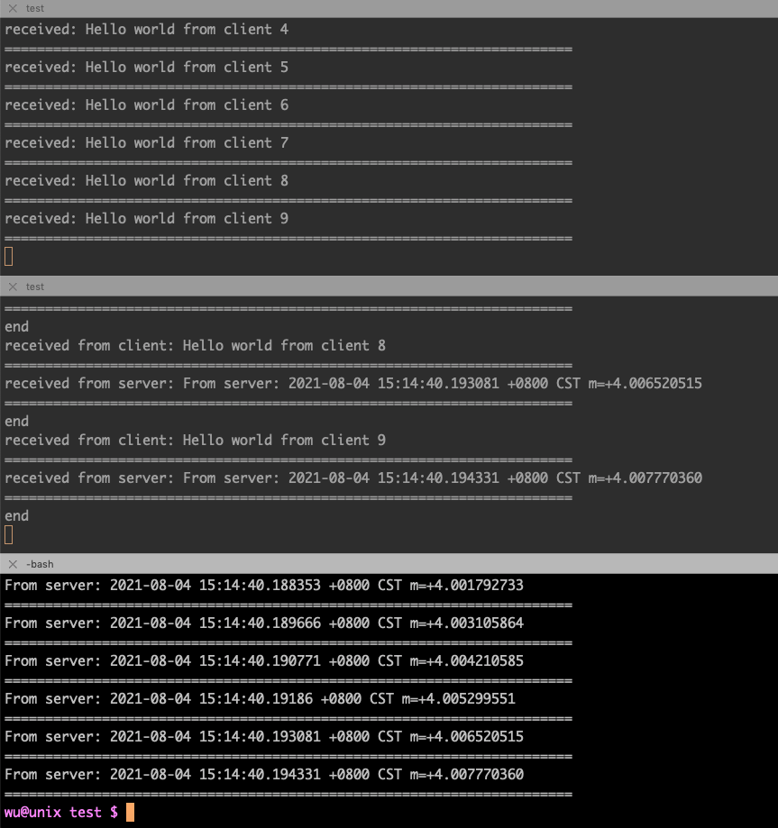

连接池是什么东西？所谓连接，指的是TCP连接，而池，则是容器，普通的池子可以容纳水等物体，而连接池，则是容纳TCP连接的容器。
现实中的容器可以是多种材质的，连接池也不例外，连接池可以用各种数据结构来实现，只要能保存并允许使用连接即可。为了方便，本文仅用一个变量来模拟连接池。以下是完整的示例。
package main
import (
"flag"
"fmt"
"io"
"log"
"net"
"strconv"
"sync"
"time"
)
type Pool struct {
conn net.Conn
mutex sync.Mutex
}
var pool Pool
func initPool(addr string) {
conn, err := net.DialTimeout("tcp", addr, time.Minute*5)
if err != nil {
log.Fatal(err)
}
pool.conn = conn
}
func main() {
t := flag.String("type", "client", "APP type")
flag.Parse()
switch *t {
case "server":
l, err := net.Listen("tcp", ":45920")
if err != nil {
log.Fatal(err)
}
defer l.Close()
conn, err := l.Accept()
if err != nil {
log.Fatal(err)
}
defer conn.Close()
for {
received := make([]byte, 1024)
n, err := conn.Read(received)
printLog(err)
fmt.Printf("received: %s\n", received[:n])
separator()
_, err = conn.Write([]byte("From server: " + time.Now().String()))
printLog(err)
}
case "tunnel":
initPool("localhost:45920")
l, err := net.Listen("tcp", ":45930")
if err != nil {
log.Fatal(err)
}
defer l.Close()
for {
conn, err := l.Accept()
if err != nil {
log.Println(err)
continue
}
go handleConn(conn)
}
case "client":
for i := 0; i < 10; i++ {
client, err := net.Dial("tcp", "localhost:45930")
if err != nil {
log.Fatal(err)
}
_, err = client.Write([]byte("Hello world from client " + strconv.Itoa(i)))
if err != nil {
log.Println(err)
continue
}
received := make([]byte, 1024)
n, err := client.Read(received)
printLog(err)
fmt.Printf("%s\n", received[:n])
separator()
}
}
}
func printLog(err error) {
if err != nil && err != io.EOF {
log.Println(err)
}
}
func separator() {
fmt.Println("======================================================================")
}
func handleConn(conn net.Conn) {
defer conn.Close()
received := make([]byte, 1024)
n, err := conn.Read(received)
if err != nil && err != io.EOF {
log.Println(err)
return
}
fmt.Printf("received from client: %s\n", received[:n])
separator()
pool.mutex.Lock()
defer pool.mutex.Unlock()
n, err = pool.conn.Write(received[:n])
if err != nil {
log.Println(err)
return
}
n, err = pool.conn.Read(received)
if err != nil && err != io.EOF {
log.Println(err)
return
}
fmt.Printf("received from server: %s\n", received[:n])
separator()
n, err = conn.Write(received[:n])
if err != nil {
log.Println(err)
return
}
fmt.Println("end")
}
测试方法如下：
- 启动 server：
$ go run test.go -type server
- 启动 tunnel：
$ go run test.go -type tunnel
- 启动 client：
$ go run test.go
如无意外，应该能看到以下效果：

以上代码模拟了三个端，客户端、代理端、服务端，其中连接池 pool 的模拟在 tunnel 代理端。tunnel 创建与 server 之间的连接，在 client 连接时自动复用该连接进行数据的转发。
虽然只用了一个变量，但也起到了连接池的作用了：复用连接，减少因创建连接而产生的资源消耗。当然，真正的连接池还得做很多处理，例如使用心跳保持连接，及时将断开的连接清除掉并重新创建连接令连接池的连接保持在一定数量，获取连接时判断一下连接是否有效，使用完将连接放回连接池，连接池自动扩容等。